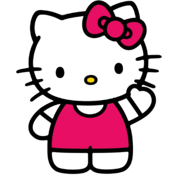

Ela é uma personagem muito conhecida, criada pela empresa japonesa Sanrio em 1974 e rapidamente se tornou um sucesso entre crianças, adolescentes e até adultos, com fãs pelo mundo todo, sua imagem é usada em cadernos, mochilas, roupas, brinquedos e muitos outros itens.
Hello Kitty é uma gata branca com um laço vermelho na orelha esquerda, tem uma personalidade amigável e um estilo fofo, a personagem é frequentemente asssociada á amizade, bondade , ao respeito e ao compartilhamento de momentos felizes. A mesma é considerada um ícone da cultura pop japonesa e do estilo kawaii, que valoriza oque é fofo e delicado.

Além de estar em produtos, Hello Kitty também aparece em diversos desenhos animados, como o Hello Kitty and Friends. Esses desenhos retratam as aventuras de Hello Kitty e seus amigos em um mundo imaginário, repleto de diversão e aprendizado.
Para informações mais detalhadas, visite o site oficial da Sanrio aonde você encontrará produtos, informações sobre personagens e muito mais!